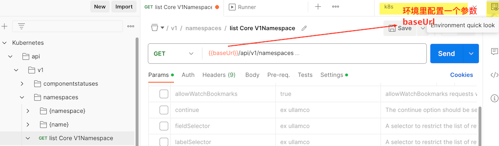

k8s
环境安装
Warning
从1.24开始 k8s使用的docker-engine 不一样了. 是cri-dockerd 而不是原来的dockerd-shm
k8s文档离线部署
clone https://github.com/kubernetes/website.git
cd website
解决搜索后得到的url是kubernetes官方地址的问题
配置文件修改, 可能不需要?
static/js/search.js 添加替换url的代码 $ . ajax ( ajaxConf ). done ( function ( res ) {
if ( res . webPages == null ) return ; // If no result, 'webPages' is 'undefined'
var paginationAnchors = window . getPaginationAnchors ( Math . ceil ( res . webPages . totalEstimatedMatches / 10 ));
res . webPages . value . map ( ob => { results += window . getResultMarkupString ( ob ); })
// ===== add start ======
re = new RegExp ( "https://kubernetes.io" , "g" );
results = results . replace ( re , "http://localhost:8000" );
// ===== add end ======
if ( $ ( '#bing-results-container' ). length > 0 ) $ ( '#bing-results-container' ). html ( results );
if ( $ ( '#bing-pagination-container' ). length > 0 ) $ ( '#bing-pagination-container' ). html ( paginationAnchors );
});
hugo 生成静态文件方式 指定版本 docker 方式
# 安装hugo 和node , 将里面的对应版本修改为你安装的版本
# netlify.toml
config --global url."https://ghproxy.com/https://github.com/" .insteadOf https://github.com/
module-init
ci
# 生成静态文件到当前public目录 ,用nginx 来配置, 不要用 make serve ,会占用大量内存.
# 取消
config --global --unset url."https://ghproxy.com/https://github.com/" .insteadOf
# 更新api 文档
'https://ghproxy.com/https://raw.githubusercontent.com/kubernetes/kubernetes/master/api/openapi-spec/swagger.json' > api-ref-assets/api/swagger.json
cd api-ref-generator/gen-resourcesdocs
get -u golang.org/x/sys
#go: upgraded golang.org/x/sys v0.0.0-20200930185726-fdedc70b468f => v0.9.0
cd ../../
api-reference
nginx.conf
Note
如果想要配置多个版本, 在页面上可以点击跳转到比如1.26的文档, 那么修改 config.toml里的params.versions对应的url,也要对应生成静态文件,nginx 配置url打开网页,首页就会看到 You are viewing documentation for Kubernetes version: v1.23
co release-1.23
# 使用配置文件里原来的版本, 最新的hugo 生成静态文件时会报错...
install -tags extended github.com/gohugoio/hugo@v0.87.0
config --global url."https://ghproxy.com/https://github.com/" .insteadOf https://github.com/
module-init
ci
# 生成静态文件到当前public目录 ,用nginx 来配置, 不要用 make serve ,会占用大量内存.
# 取消
config --global --unset url."https://ghproxy.com/https://github.com/" .insteadOf
# 更新api 文档
https://ghproxy.com/https://raw.githubusercontent.com/kubernetes/kubernetes/release-1.23/api/openapi-spec/swagger.json > api-ref-assets/api/swagger.json
cd api-ref-generator/gen-resourcesdocs
get -u golang.org/x/sys
#go: upgraded golang.org/x/sys v0.0.0-20200930185726-fdedc70b468f => v0.9.0
cd ../../
api-reference
api 导入postman
上面的 swagger.json 导入postman
# 部署完k8s后
proxy --accept-hosts= ".*" --address= 0 .0.0.0
kubectl 所在主机ip:8001

sed发送请求后提示ssl错误, 在settings 里将 Enable SSL certificate verification 取消
前置安装
Danger
我打包的虚拟机镜像里已经前置安装了一些东西,可能有些这里没记录.后续我再整理.
关闭防火墙
# --now 表示 马上停止, 这样就是禁用并停止
disable --now firewalld
# systemctl disable --now dnsmasq
# systemctl disable --now NetworkManager
# 以前我这个也是disabled
-Ei.bak 's/^SELINUX=[[:alpha:]]+$/SELINUX=permissive/' /etc/selinux/config
-Ei.bak 's/^SELINUX=[[:alpha:]]+$/SELINUX=disabled/' /etc/sysconfig/selinux
0 # 0表示设置为permissive
# 查看, 显示 permissive
关闭 swap分区
-a && sysctl -w vm.swappiness= 0
# 注释掉fstab 里的swap配置
-Ei.bak '/^[^#]*swap/s/^/#/' /etc/fstab
docker配置
/etc/docker/daemon.json {
"registry-mirrors" : [
"https://registry.docker-cn.com" ,
"http://hub-mirror.c.163.com" ,
"https://docker.mirrors.ustc.edu.cn"
],
"exec-opts" : [ "native.cgroupdriver=systemd" ],
"max-concurrent-downloads" : 10 ,
"max-concurrent-uploads" : 5 ,
"log-opts" : { // /var/lib/docker/containers/
"max-size" : "300m" ,
"max-file" : "2"
},
"live-restore" : true // 如果不是true, 重启docker,回导致容器重启.
}
daemon-reload
restart docker
# 查看是否配置
info | grep -E -A 3 "Cgroup|Registry Mirrors"
时间同步
set-timezone Asia/Shanghai
-i "s/server 0.centos.pool.ntp.org iburst/server cn.pool.ntp.org iburst/" /etc/chrony.conf
enable chronyd
start chronyd
ulimit
ulimit -SHn 65535
>> /etc/security/limits.conf <<EOF
* soft nofile 655350
* hard nofile 655350
* soft noproc 655350
* hard noproc 655350
* soft memlock unlimited
* hard memlock unlimited
EOF
节点间ssh配置
>> /etc/hosts << EOF
192.168.66.100 m1
192.168.66.101 m2
192.168.66.102 m3
192.168.66.110 n1
192.168.66.111 n2
EOF
# 将 master的 pub 发送到 node
-t rsa
for i in n1 n2 m2 m3; do ssh-copy-id -i ~/.ssh/id_rsa.pub root@$i ; done
部署
kubeadm方式
官方文档
所有节点安装kubeadm
master节点init
config print init-defaults > kubeadm.yaml
Tips
apiVersion 注意看配置文件的每个kind的版本, 然后去文档搜对应的配置,可能有变化
kubeadm.yaml 做一些修改 apiVersion : kubeadm.k8s.io/v1beta3
bootstrapTokens :
- groups :
- system:bootstrappers:kubeadm:default-node-token
token : abcdef.0123456789abcdef
ttl : 24h0m0s
usages :
- signing
- authentication
kind : InitConfiguration
localAPIEndpoint :
advertiseAddress : 192.168.66.102 # (1)
bindPort : 6443
nodeRegistration :
criSocket : /var/run/dockershim.sock # docker 作为runtime
# criSocket: unix:///var/run/containerd/containerd.sock # containerd 作为runtime
imagePullPolicy : IfNotPresent
name : master # (4)
taints : null
---
apiServer :
timeoutForControlPlane : 4m0s
apiVersion : kubeadm.k8s.io/v1beta3
certificatesDir : /etc/kubernetes/pki
clusterName : kubernetes
controllerManager : {}
dns : {}
# type: CoreDNS v1beta3 字段 "ClusterConfiguration.dns.type" 已经被移除，因为 CoreDNS 是 kubeadm 所支持 的唯一 DNS 服务器类型。
etcd :
local :
dataDir : /var/lib/etcd
listen-peer-urls : "https://192.168.66.102:2380" # (2)
listen-client-urls : "https://192.168.66.102:2379,http://127.0.0.1:2379"
imageRepository : registry.cn-hangzhou.aliyuncs.com/google_containers # (3)
kind : ClusterConfiguration
kubernetesVersion : 1.23.17
networking :
dnsDomain : cluster.local
serviceSubnet : 10.96.0.0/12
podSubnet : 10.244.0.0/16 # (5)
scheduler : {}
master节点的ip
添加listen-peer-urls
修改为 aliyun 的
节点的名字
集群Pod的网段
master节点 # 列出需要下载的镜像
config images list --config kubeadm.yaml
# 先 下载 镜像
config images pull --config kubeadm.yaml
init --config kubeadm.yaml
# 可以重新修改相关配置.
edit cm -n kube-system kubeadm-config
-p $HOME /.kube
cp -i /etc/kubernetes/admin.conf $HOME /.kube/config
chown $( id -u) :$( id -g) $HOME /.kube/config
# 记下 kubeadm join 的命令
# 忘记了, 也没关系 ,重新输出
token create --print-join-command
get po -A # 会看到CoreDNS pending 中, 需要安装网络插件
安装 Pod 网络附加组件
Note
有许多网络模型可以选择
需要kubeadm init 时指定 --pod-network-cidr 这个参数
https://docs.projectcalico.org/manifests/calico.yaml
# 会看到 实际的url
https://ghproxy.com/https://raw.githubusercontent.com/projectcalico/calico/v3.26.1/manifests/calico.yaml
# 做相应修改..
apply -f calico.yaml
network-plugins
通过给 Kubelet 传递 --network-plugin=cni 命令行选项可以选择 CNI 插件。 Kubelet 从 --cni-conf-dir （默认是 /etc/cni/net.d） 读取文件并使用 该文件中的 CNI 配置来设置各个 Pod 的网络
删除calico 需要到 每个节点上的 /etc/cni/net.d 目录下删除 calico 的相关配置, 然后 都systemctl restart kubelet
node节点join
Note
kubectl 执行的命令会去请求master节点的apiserver,需要权限, 使用的配置文件需要从master那里复制过来.
all_nodes = 'n1 n2'
for node in $all_nodes ; do
ssh $node "mkdir -p /root/.kube"
scp /etc/kubernetes/admin.conf $node :/root/.kube/config
done
join 192 .168.66.100:6443 --token ... --discovery-token-ca-cert-hash ...
安装后的相关配置以及更新
Tip
在 k8s 中,有一种特殊的容器启动方法叫做"Static Pod"。它允许你把要部署的 Pod 的 YAML 文件放在一个指定的目录里 ,当这台机器上的 kubelet 启动时，它会 自动检查这个目录，加载所有的 Pod YAML 文件，然后在这台机器上启动它们
centos找到kubelet的配置文件 # 1. 先看配置文件位置
-ef | grep kubelet
# 2. 首先我们 kubelet 是通过systemctl 启动的.
/etc/systemd/system | grep kubelet -B 10
# 3. 位置在这, 你会发现里面并没有配置信息,这与我们 ps -ef |grep kubelet 看到的,不一样
#(1)
# 4. 那么必定有 /usr/lib/systemd/system/kubelet.service.d 文件夹用于放置配置文件的
# 里面的.conf 配置文件会对 systemd 单元文件(.service 里的启动程序) 进行添加、修改或覆盖服务的特定选项
# systemd 会加载它们并应用于原始服务单元文件
/usr/lib/systemd/system/kubelet.service.d
10 -kubeadm.conf
# 5. 10-kubeadm.conf 看名字都知道这个是kubeadm 给我们创建的.
10 -kubeadm.conf #(2)
kubelet.service
10-kubeadm.conf
查看staticPod目录 staticPod /var/lib/kubelet/config.yaml
/etc/kubernetes/manifests
etcd.yaml
kube-apiserver.yaml
kube-controller-manager.yaml
kube-scheduler.yaml
Tip
kubelet 会监视这个目录,你在里面比如创建一个pod的yaml,kubelet就会为你创建这个pod.
minikube
kind方式
二进制方式
kubespray方式
kubespray
kubesphere
rancher
kops
Tip
Installing and launching a Kubernetes cluster hosted on AWS, GCE, DigitalOcean, Hetzner, OpenStack, Azure
Google Kubernetes Engine (GKE)
高可用集群
后置安装
自动补全
kubectl自动补全
独立安装kubectl
mac安装kubectl
-LO "https://dl.k8s.io/release/v1.23.17/bin/darwin/amd64/kubectl"
+x kubectl
kubectl /usr/local/bin
# 将master节点(我的环境 是虚拟机)里的.kube 文件夹复制到 mac (host 主机)的 ~ 目录
# 这样
验证是否配置成功 cluster-info # 看看
get no
NAME STATUS ROLES AGE VERSION
master1 Ready control-plane,master 4d23h v1.23.17
node1 Ready <none> 3d17h v1.23.17
node2 Ready <none> 4m46s v1.23.17
get no -o wide # 可以看到 使用的容器运行时
{kind=link}